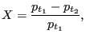

This is a straight pipe with constant section and head losses
 defined by the formula:
defined by the formula:
| (125) |
where f is the White-Colebrook coefficient (dimensionless),  is the
mass flux, L is the length of the pipe, g is the gravity
acceleration (
m
is the
mass flux, L is the length of the pipe, g is the gravity
acceleration (
m s
s ), A is the cross section of the pipe
and D is the diameter. The White-Colebrook coefficient satisfies the
following implicit equation:
), A is the cross section of the pipe
and D is the diameter. The White-Colebrook coefficient satisfies the
following implicit equation:
Here,  is the diameter of the material grains at the surface of the pipe
and Re is the Reynolds number defined by
is the diameter of the material grains at the surface of the pipe
and Re is the Reynolds number defined by
Re |
(127) |
where  is the liquid velocity and
is the liquid velocity and  is the kinematic viscosity. It
satisfies
where
is the kinematic viscosity. It
satisfies
where  is the dynamic viscosity.
is the dynamic viscosity.
The following constants have to be specified on the line beneath the *FLUID SECTION, TYPE=PIPE WHITE-COLEBROOK card:
The gravity acceleration must be specified by a gravity type
*DLOAD card defined for the elements at stake. The material
characteristics  and
and  can be defined by a
*DENSITY and *FLUID CONSTANTS
card. Typical values for
can be defined by a
*DENSITY and *FLUID CONSTANTS
card. Typical values for  are 0.25 mm for cast iron, 0.1 mm for welded
steel, 1.2 mm for concrete, 0.006 mm for copper and 0.003 mm for glass.
are 0.25 mm for cast iron, 0.1 mm for welded
steel, 1.2 mm for concrete, 0.006 mm for copper and 0.003 mm for glass.
The form factor  is only used to modify the friction expression for
non-circular cross sections in the laminar
regime as follows:
is only used to modify the friction expression for
non-circular cross sections in the laminar
regime as follows:
|  | (128) |
Values for  for several cross sections can be found in
[13]. For a square cross section its value is 0.88, for a rectangle
with a height to width ratio of 2 its value is 0.97.
for several cross sections can be found in
[13]. For a square cross section its value is 0.88, for a rectangle
with a height to width ratio of 2 its value is 0.97.
By specifying the addition FLEXIBLE in the type label the user can create a flexible pipe. In that case the user specifies two nodes, the distance between them being the radius of the pipe. These nodes have to be genuine structural nodes and should not belong to the fluid network. The distance is calculated from the location of the nodes at the start of the calculation modified by any displacements affecting the nodes. Consequently, the use of the *COUPLED TEMPERATURE-DISPLACEMENT keyword allows for a coupling of the deformation of the pipe wall with the flow in the pipe. The following constants have to be specified on the line beneath the *FLUID SECTION, TYPE=PIPE WHITE-COLEBROOK FLEXIBLE card:
Example files: pipe2.